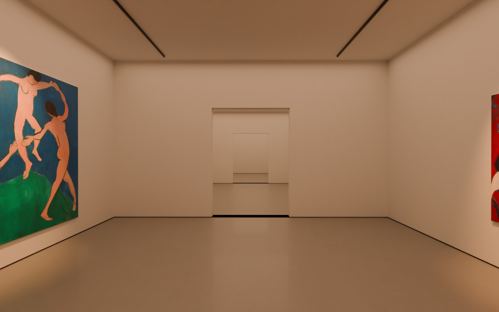
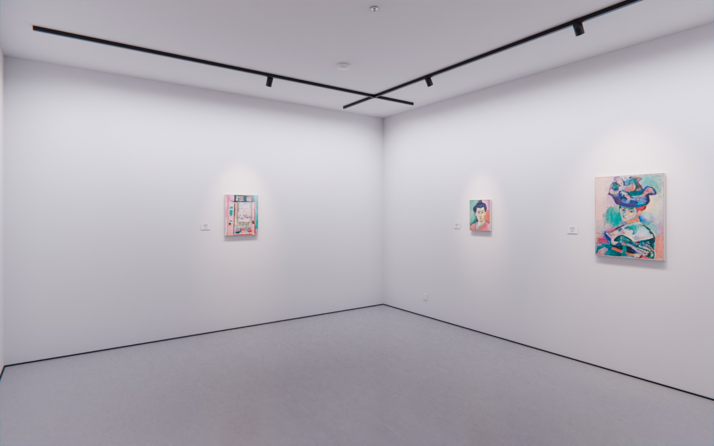
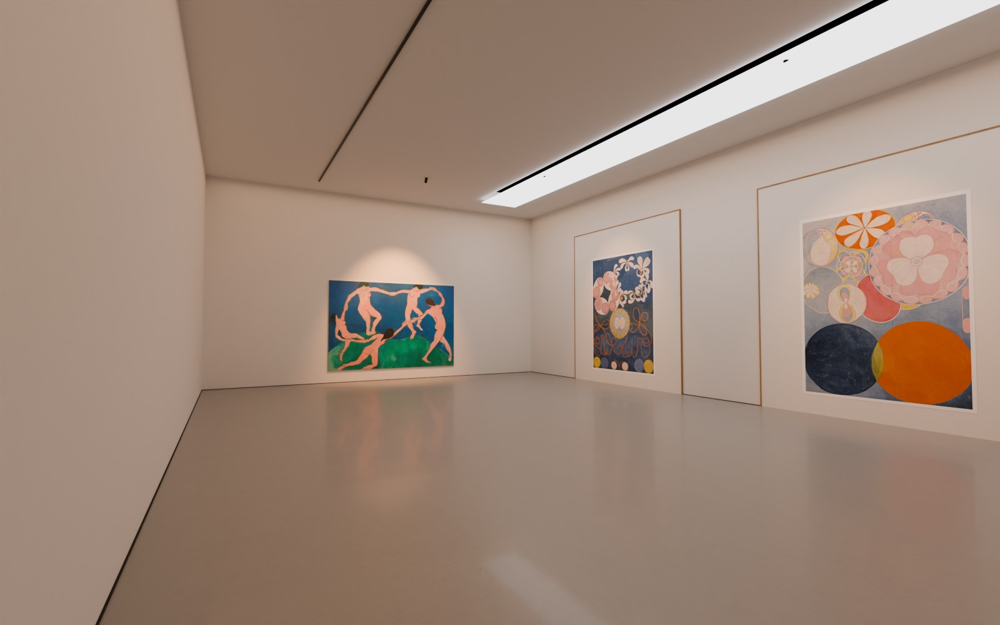

עשרה סוגי חללי תערוכה, כל אחד בשלוש גרסאות, מרונדרים באור פיזיקלי לפי המספרים של מוזיאונים, עם עבודות אמיתיות בגודלן האמיתי. ולצדם, כל מה שהשתנה היום באפליקציה.
אמה השתנה היום באפליקציה
אמנים אמיתיים. במקום האמנים שהמצאנו: עשרה אמנים מתולדות האמנות שהיצירות שלהם ברשות הציבור, חמש אמניות וחמישה אמנים: ואן גוך, מאטיס, ויקטור הוגו, מונה, הוקוסאי, ברת מוריזו, מרי קסאט, הילמה אף קלינט, סוזן ולדון, פאולה מודרזון־בקר. לכל אחד 6 עבודות עם מידה אמיתית, שנה, טכניקה ומוזיאון. הגלריות והתערוכות שלהם נשארו לדוגמה, ועמוד האמן אומר זאת.
חדר הבקרה בעברית. נפתח מכפתור "Control room" בעמוד החשבון (העיגול עם האות הראשונה בעמוד הבית). בראשו "סיכום": אמנים שמחכים, עבודות חדשות לבדיקה (נראה טוב / הסתר), מי הצטרף היום ובשבוע, ומספרים.
סיור כמשתמש חדש. שני כפתורים בסיכום: "סיור כמבקר חדש" ו"סיור כאמן חדש". עוברים על כל מסכי ההרשמה בלי מייל אמיתי ובלי לשמור כלום; פס כחול למעלה עם "יציאה". מתחת: חשבונות בדיקה אמיתיים למי שרוצה לבדוק גם שליחת מייל.
ייבוא אתר שלם. מכתובת האתר מגיעים: העבודות (המידות לפי כיוון התמונה עצמה), ההצהרה, טקסט "אודות", הדיוקן, קורות החיים, התערוכות עם צילומי ההצבה והעבודות של כל תערוכה, הסיור התלת־ממדי איפה שיש (Ritual), והאובייקטים (הפרגוד והקיר הנע). ייבוא שני לא מכפיל. אחר כך נפתחת תערוכה תלת־ממדית מהעבודות.
עמוד אמן אחד לכולם. כל אמן מקבל את העיצוב של העמוד שלך: עבודות לפי שנים, תערוכות, "About & CV" עם הדיוקן, אובייקטים.
הלוך ושוב עד אישור. האמן רואה את העמוד שלו בדיוק כמו שמבקרים יראו, עורך בסטודיו, ושולח לבדיקה. בחדר הבקרה: "צפה בעמוד", "אשר", או "בקש שינויים" עם הערה; האמן מתקן ושולח שוב.
ייבוא מהדרייב ומהטלפון. "Choose from Google Drive" פותח את הדרייב ובוחרים תמונות; אחרי חיפוש הדף יורד לבד לתוצאות; מכל עמוד בסטודיו יש "← Open Studio".
Google. חלון ההתחברות עם Google אומר עכשיו "to continue to Open Studio".
תיקון. תמונות מסך הפתיחה הצביעו על העבודות המומצאות שנמחקו; עכשיו העבודות האמיתיות.
מה עוד פתוח
אינסטגרם: הכפתור, השרת וההגדרות ב־Meta בנויים, אבל פייסבוק מחזיר בלי חשבון אינסטגרם. בפעם הבאה: צילומי מסך של חלונות פייסבוק והיומן שהשרת רושם עכשיו.
החללים באפליקציה: הרינדורים שכאן הם המטרה. השלב הבא הוא להכניס חדר אחד לאפליקציה בשיטה שהמחקר ממליץ עליה, ולהשוות באייפון.
סיור תלת־ממדי מתערוכה מיובאת: Ritual מקבלת את הסיור שכבר קיים. בניית סיור חדש מצילומי הצבה של אמן חדש היא תהליך בשרת שעוד לא מחובר לייבוא.
באיך בנינו את החללים
כרגע החדרים באפליקציה מצוירים בדפדפן, ולכן הם נראים פשוטים ודיגיטליים. המחקר (בקובץ research.md) בדק את המתחרים ואת הטכניקות, והמסקנה: הרמה הגבוהה ביותר שרצה בטלפון היא חדר שנבנה ונאפה מראש במנוע רינדור פיזיקלי, ובדפדפן מוסיפים רק את האור של כל עבודה. כך עובד Shapespark, המתחרה הריאליסטי ביותר; אף אחד מהמתחרים לא מציע "תאורה מקצועית של גלריה" כמו שאנחנו בונים.
מה עשינו
כתבנו סקריפט שבונה ב־Blender את עשרת הסוגים, כל אחד בשלוש גרסאות: קטן, בינוני, גדול או כמה חדרים ברצף.
חומרים אמיתיים (טקסטורות CC0 של Poly Haven): בטון, טיח, אלון, פרקט אדרה, לבנים, גרניט, טטאמי, ארז יפני.
הרינדור ב־Cycles, מנוע מעקב קרני אור, על השרתים של GitHub.
עבודות אמיתיות של האמנים החדשים, בגודלן האמיתי בס"מ, תלויות בגובה העין.
האור, לפי מספרים של מוזיאונים
מה
מספר
מקור
אור על ציור שמן
כ־200 לוקס
מוזיאונים, הכלל של 50/200
אור על נייר, הדפס, צילום
50 לוקס
שימור
צבע האור של הספוטים
3000K, אחיד בכל החלל
המכון הקנדי לשימור
כיוון הספוט
30° מהאנך, כלומר 60° לאופק
"כלל 30 המעלות"
מרחק הספוט מהקיר
(גובה התקרה − 160 ס"מ) × 0.577
המכון הקנדי לשימור
אור יום (חלון צפוני, תקרת אור)
6500K, דרך מפזר
Beyeler, Menil, Kimbell
אור כללי על הקירות (וולוושרים)
100 עד 150 לוקס
ERCO ופרקטיקה
השלבים הבאים
אתה בוחר אילו חללים לבנות ראשונים (המלצה: קובייה לבנה, אולם מוזיאון עם אור עליון, סלון, בטון).
שלב 0: חדר אחד נאפה מ־Blender למפות אור ונטען באפליקציה; משווים מול החדר הנוכחי באייפון. ההשוואה הזאת מכריעה.
אור לכל עבודה בזמן אמת, כך שכל אמן ואוצר יכולים לתלות עבודות משלהם והאור נשאר נכון.
שאר החדרים, הקשים (זכוכית, קופסה שחורה עם וידאו) בסוף.
1קובייה לבנה
השראה: David Zwirner וגלריות צ'לסי
קירות טיח לבנים, רצפת בטון מוחלק אפור, מסילות ספוטים בשורה, וחלון אור בתקרה בגרסה הגדולה.
מתאים ל: כל סוג של עבודה: ציור, צילום, פיסול על פודסט. ניטרלי ובטוח.

בינוני · Three rooms in a row, 9 × 7 m each

קטן · Project room, 6 × 5 m

גדול · Hall under a skylight, 15 × 10 m
2לופט תעשייתי
השראה: Dia Beacon, Hamburger Bahnhof
גג משור עם זיגוג צפוני, קורות פלדה, עמודי ברזל, קירות לבנים מסוידות ורצפת בטון בשימוש.
מתאים ל: עבודות גדולות, סדרות, מיצב. מונומנטלי ושקט.